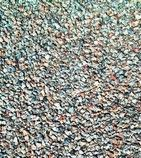

Granit
Доставка нерудных материалов
8 800 342-13-33
Бесплатный звонок по России
Один из важнейших строительных материалов – гранитный щебень – широко применяется в строительстве зданий и дорог, как сырьё для производства ЖБИ, бетонных работ. Его главными свойствами являются высокая прочность и устойчивость к нагрузкам и неблагоприятным климатическим условиям.
По своим физико-механическим свойствам щебень гранитный намного превосходит все известные другие виды щебня. Его применяют в качестве одного из основных компонентов при проведении наиболее ответственных строительных работ. К таким можно отнести возведение мостов, аэродромных бетонных покрытий, плотин, автострад, фундаментов, несущих конструкций высотных зданий. Добывается гранитный щебень, в основном, в карьерах способом дробления гранитного основания. При этом стоимость получаемого щебня зависит от степени его дробления. Очевидно, что чем меньше фракция гранитного щебня, тем дороже его производство.
Получаемые при производстве щебня фракции отличаются, главным образом, размерами частиц и их формой. Большим спросом пользуется у заказчиков гранитный щебень 5 20 мм, относящийся к классу мелкой фракции. Такой щебень используется при изготовлении высокопрочных бетонных изделий различного назначения. Купить щебень мелкой фракции на складе компании можно с одновременным заказом его доставки потребителю.

Наша компания предлагает к реализации высококачественный гранитный щебень, в том числе наиболее популярных фракций – мелкой и средней. Купить гранитный щебень можно непосредственно на нашем складе, расположенном в городе Алексине Тульской области. Можно также заказать щебень в Москве, обратившись удобным способом в расположенный там главный офис компании.
Кроме мелкой и средней фракции популярен также и гранитный щебень крупных размеров, так называемый бутовый камень. Его можно применять для возведения стен, ограждений, фундаментов, различных подпорных стенок. Он обладает хорошими декоративными свойствами.
В зависимости от соотношения входящих в состав гранита минералов, он может иметь различные оттенки. К таким составляющим относятся кристаллы кварца, полевого шпата, слюды. Цвет гранита может поэтому меняться в широком диапазоне оттенков: от серого и почти чёрного, до розового и красноватого. Отшлифованная и отполированная поверхность гранита обладает превосходными эстетическими характеристиками. Он широко применяется в качестве декоративного материала.
При заказе более 20 тонн наша компания так же осуществляет поставки прочих нерудных материалов, таких как:
Средний расход топлива на сочлененных самосвалах:
Наш опыт по доставке грузов и прямые договора с производителями материала позволит предложить Вам оптимальные цены и отличное качество.